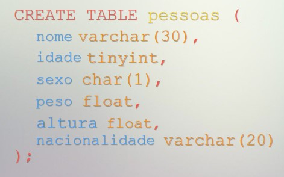

Vamos continuar o exercício criando a tabela pessoas.

Adicionar uma nova coluna
Alter table pessoas
add column profissao varchar(20);
#Vai adicionar a nova coluna no final da tabela, o campo column é facultativo
Remover uma coluna
Alter table pessoas
drop column profissao ;
#Vai apagar a coluna, o campo column é facultativo
adicionar uma coluna em certa posição
Alter table pessoas
add column profissao varchar(20) after nome;
#Vai adicionar uma nova coluna depois da coluna "nome", o campo column é facultativo
Ou se for para a primeira posição
Alter table pessoas
drop column profissao varchar(20) first ;
#Vai adicionar uma nova coluna na primeira posição, o campo column é facultativo
Renomear o nome de uma tabela
Alter table pessoas
rename to novas_pessoas;
#Vai renomear o nome da tabela
Renomear o nome de uma coluna
Alter table pessoas
change column nacionalidade pais varchar(20);
#Vai renomear o nome da coluna, column é opcional
Constrains
Os constrains são inseridos a seguir ao tipo_de_dados aquando se cria a coluna na tabela.
null
not null
auto-increment # apenas quando se tem uma chave primária
unique
unsigned
default '2020'
Corrigir linhas incorretas
update pessoas
set nome ='Maria'
where numero = '1' ; # Vai corrigir o nome para 'maria'
update pessoas
set nome ='Maria', altura = '1,65'
where numero = '1'
limit 1 ; # Vai corrigir os dados com o limite de uma linha
Remover uma linha
delete from pessoas
where numero = '1' ; # Vai apagar as linhas com numero = 1
delete from pessoas
where numero = '1'
limit 3 ; # vai apagar apenas as três primeiras linhas com numero = 1
Remover todas as linhas
truncate table pessoas ;
delete from pessoas ;